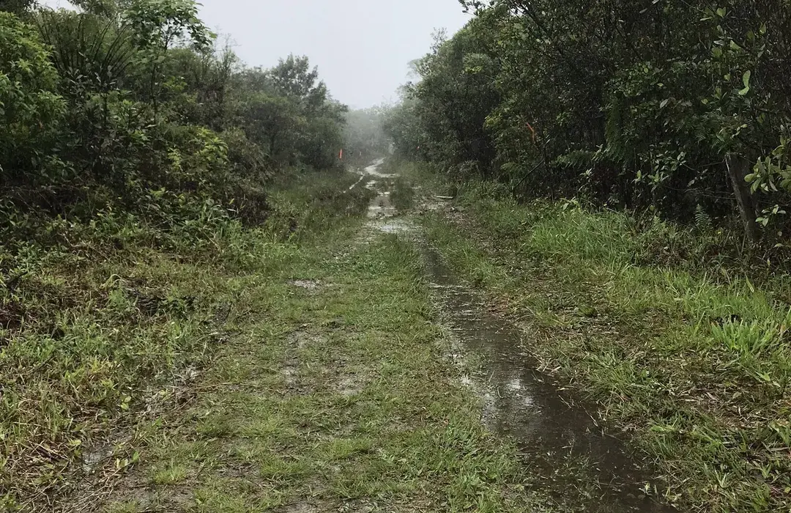
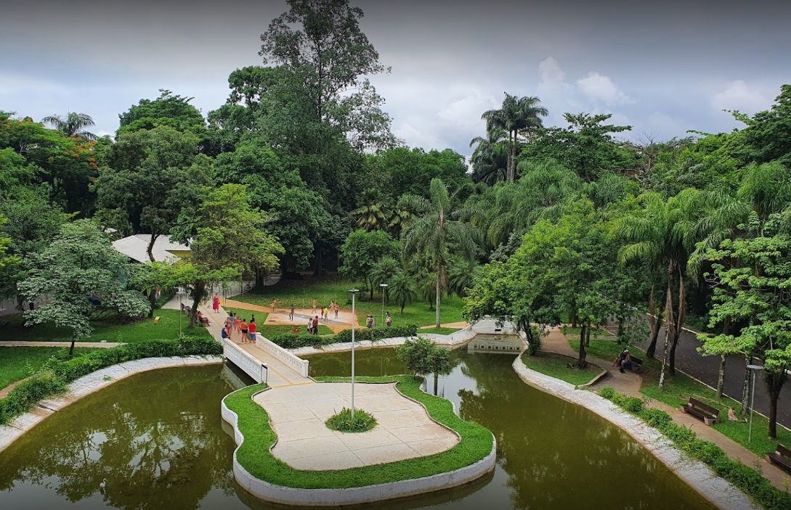

Cubatão

Esta é uma trilha que tem despertado interesse maior e que, já em 1560, servia como caminho para transpor OS contrafortes da Serra do Mar. A trilha começa em Cubatão de onde a visão é diferente, Os obstáculos são vencidos com a ajuda da própria natureza. Árvores e raízes parecem ter sido dispostas propositalmente, ora se transformando em escadas, ora raízes transformando-se em cordas. Até mesmo no paredão de pedra encontramos fenda igual a uma escada. A trilha segue nas margens do rio Perequê, com parada em piscinas naturais ambiente para descanso e recreação. Também é um atrativo a Cachoeira Véu de Noiva, com 70 metros de altura. Trata-se de um passeio de um dia repleto de satisfação em contato com a natureza.

O Jardim Botânico de Cubatão foi criado por Decreto Estadual, levando em consideração o Programa de Recuperação Socioambiental da Serra do Mar e o Sistema de Mosaicos da Mata Atlântica. A área é de 364 hectares, integralmente localizada no interior do Parque Estadual da Serra do Mar. O Decreto prevê a recuperação ambiental da parte que foi prejudicada. O Jardim Botânico vai cuidar da conservação das plantas; promover a pesquisa científica; e outras vantagens inerentes. Será administrado por nossa Fundação Florestal.